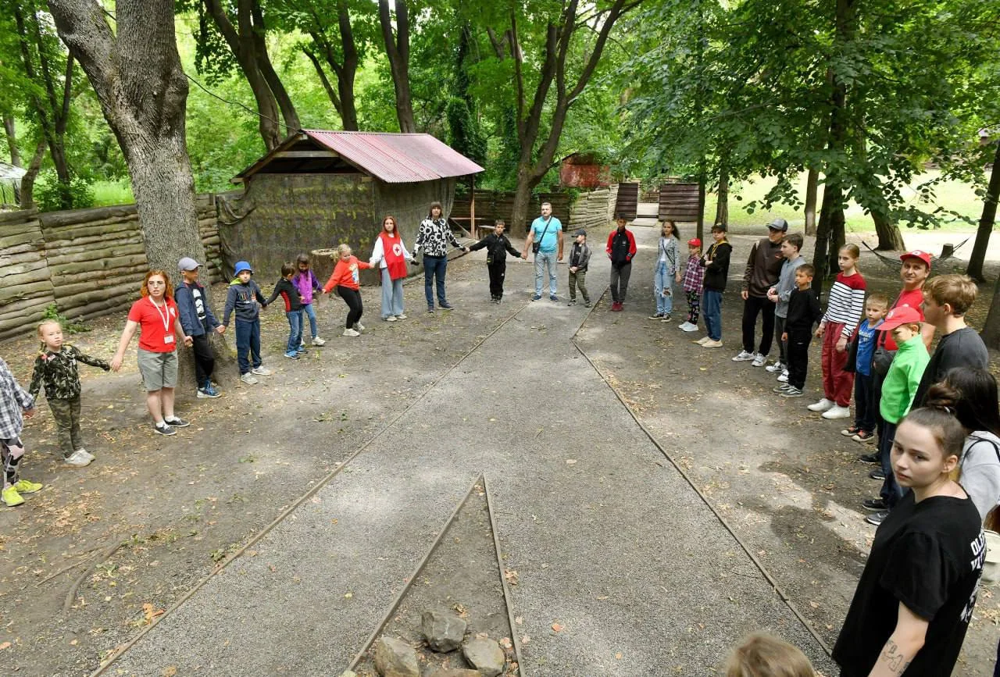
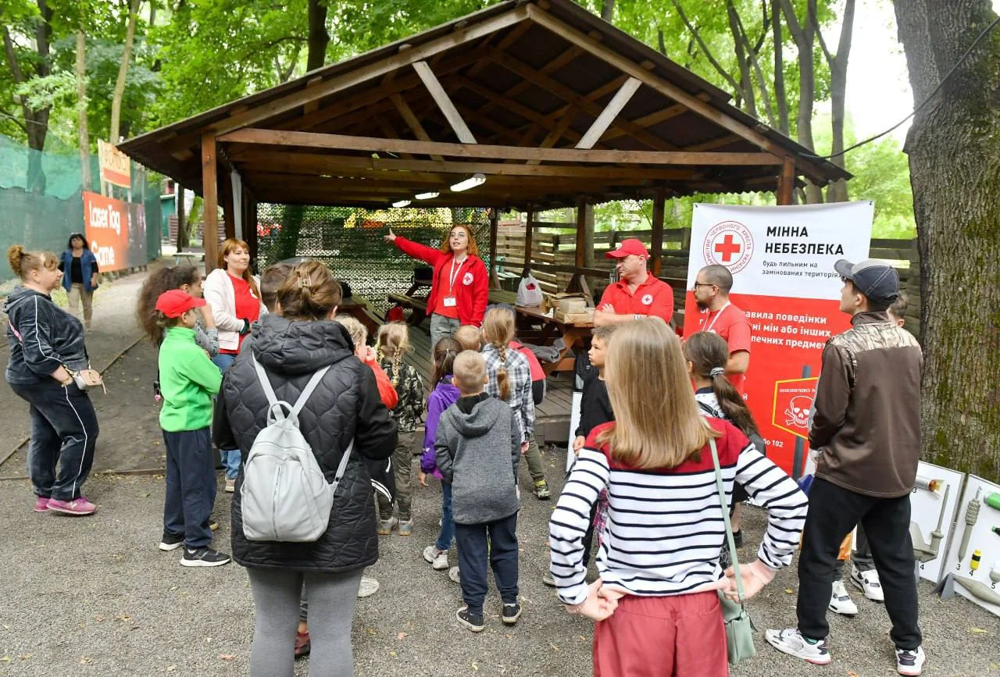
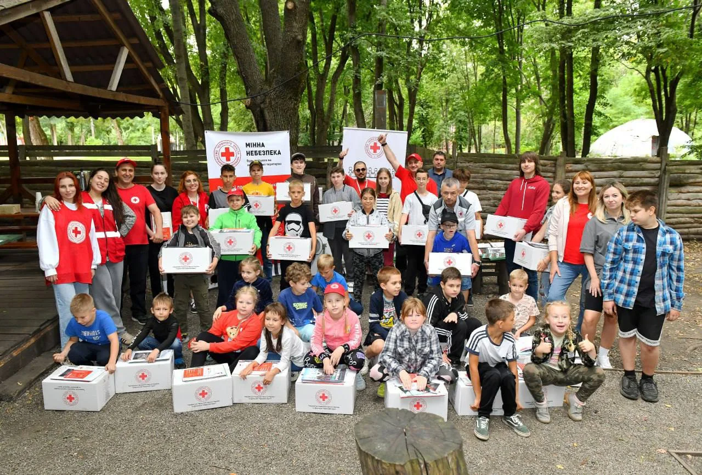

Відділ протимінної діяльності
Твоя участь
має значення.
Допомагаємо людям краще розуміти ризики
та діяти безпечніше.
Харківська обласна організація
Товариства Червоного Хреста України

01 / Що ми робимо
Безпека починається
з розуміння.
Обери, щоб дізнатися більше
Правила простими словами
Допомагаємо розібратися в ризиках, пов’язаних із мінами та вибухонебезпечними предметами.
Наш фокус у цій презентації - інформування населення про ризики та безпечну поведінку.

ХАРКІВЩИНА
02 / Можливості участі
Що тобі ближче?
Обери інтерес. Подивимося, як він може стати корисним команді.
Спілкування
з учасниками
Допомагати людям почуватися впевненіше на заходах і знаходити потрібну інформацію.
Допомога команді у зустрічі та супроводі учасників заходу.
Конкретні завдання, підготовку й можливості участі обговорюємо разом.

03 / Твій досвід
Вміння ростуть
у дії.
Завдання, у яких можна застосувати свої сильні сторони та розвивати нові.
Практика уважного слухання та зрозумілого пояснення.
Досвід домовлятися, розподіляти завдання та підтримувати одне одного.
Можливість долучатися до підготовки заходів і створення матеріалів відповідно до погодженої ролі.
04 / Перші кроки
Усе починається
зі знайомства.
Просто поговорімо
Підійди до представника відділу після виступу. Розкажи, що тебе зацікавило, і постав свої запитання.
05 / Продовжимо знайомство
Почнімо
з «привіт».
Підійди до нас після виступу.
Обговоримо твої інтереси та можливі ролі.
Відділ протимінної діяльності
Харківська обласна організація ТЧХУ
УЧАСТЬ
ВАЖЛИВА.